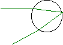

Programmet Regnbuen indeholder en række simulationer i bølgelære, farver, optik og om regnbuens fysik.
I hjælpefilen (og i hæftet »Regnbuen«) findes en række eksperimentelle øvelsesvejledninger. Øvelsesvejledningerne til Regnbuen er udarbejdet af Lars Christensen, Allerød Gymnasium.
| · Om Regnbuen | · Regnbuens historie | · Litteratur om regnbuen |
| · Download demo | · Sidste nyt | |
Simulationer: se diagram nederst på siden |
||
Bølgelære: |
Farver og optik: |
Regnbuen: |
| · Brydning | · Farveblanding | · Regnbuens kegle |
| · Brydningsloven | · Komplementærfarver | · Dråben |
| · Interferens i en tynd film | · Øjets træthed | · Alexanders mørke bånd |
| · Polarisation i vand | · Prismet | · Regnbuens farver |
| · Superposition | · Iskrystallen | · Youngs interferens |
| · Refleksion | · Billeddannelse | · Regnbuens polarisation |
| · Dopplereffekt | · Brydning i kugleflade | · Polarisation og farver |
| · Optisk gitter | · Linsen | |
| · Enkeltspalte | · Linsesystemer | Eksperimenter: |
| · Dobbeltspalte | · Spejlbillede | · Kunstig regnbue |
| · Hydrogenspektret | · Hulspejl | · Brydningsloven |
| · Bølgeudbredelse | · Parabol | · Dispersion |
| · Stående bølger | · Polarisation | |
| Eksperimenter: | · En solstråles vej i dråben | |
| · Brændvidde | · Regnbuen i en vanddråbe | |
| · Krumningsradius | · 100 lysstråler mod en regndråbe | |
| · Parabolsk spejl | · Opgaver til eksperimenter | |
| · Forsøg med spalter | ||
Simulationerne til venstre omhandler bølgelære, og simulationerne til højre regnbuen. Forudsætningerne fremgår af pilene.
Demoversion kan vise alle menubilleder, men scrollbarer og knapper er ikke aktive.
Carl Hemmingsen